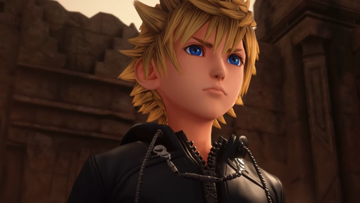
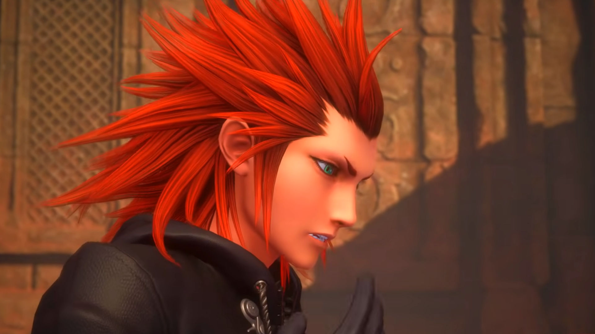
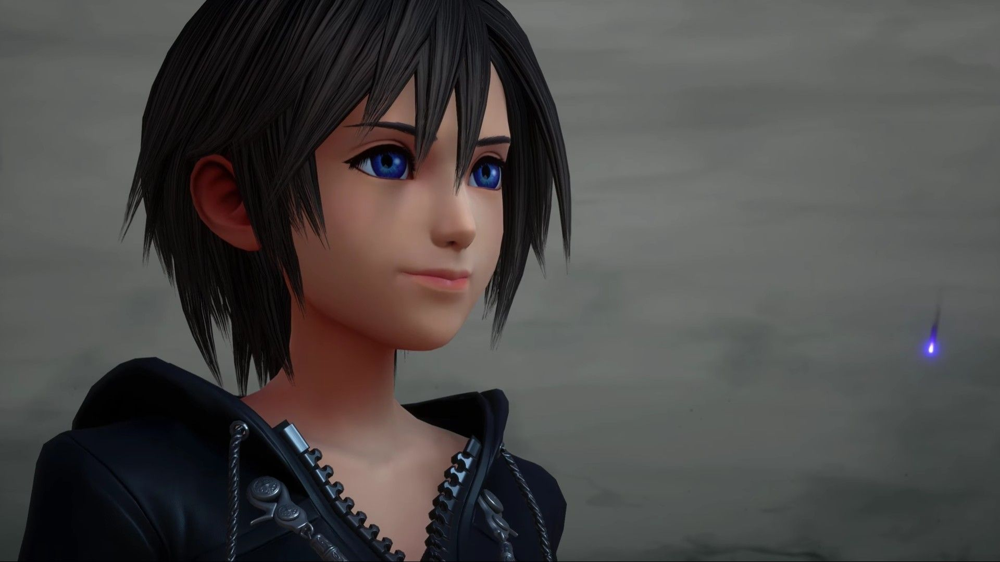

ROXASRoxas es uno de los antagonistas de este juego. Es el incorporeo de sora, que se creo en el Kingdom Heart 1, estuvo en la organizacion XIII sin embargo decidio abandonarla, como consecuencia es utilizado para devolverle los recuerdos a Sora y luego tiene que vivir en su corazon hasta conseguir un recipiente para su alma y pueda reecontarse con sus amigos. |
 |
AXELAxel es el mejor amigo de Roxas, ambos estuvieron juntos en la organiazcion sin embargo Axel no abandonó e intento que Roxas no lo hiciera. Lucha al lado de la organizacion durante un tiempo,pero luego se da cuenta de sus consecuencias y deja la organizacion para dejar de ser un incorporeo y poder ayudar a Sora y sus amigos a rescatar a Roxas y vencer a Xeanorth |
 |
XIONXion es la tercra de este grupo, no se sabe mucho de ella ya que desaparecio a la misma vez que Roxas y solo es vista por los recuerdos de Axel. Hasta que en la ultima batalla se descubre que la organizacion la estaba utilizando, pero se vulve de parte de nuestros protagonistas. Todavía no se sabe mucho de su historia. |
 |